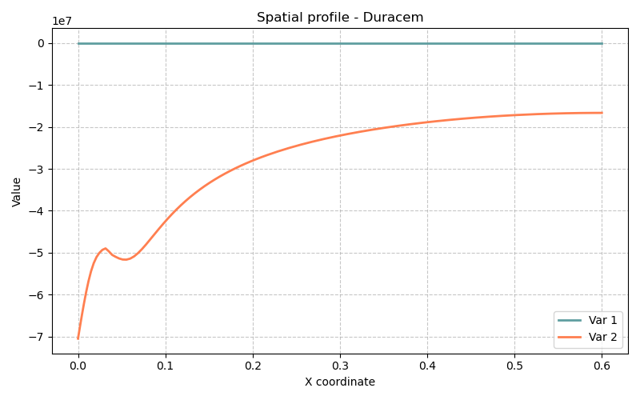

20 Modèle Duracem — Durabilité des matériaux cimentaires : carbonatation et ingression de chlorures (1D)
Fichiers sources :
src/Models/ModelFiles/Duracem.cpp·base/Duracem/Auteur du modèle Bil : P. Dangla et al. (Université Gustave Eiffel)
20.1 Table des matières
- Contexte et objectif
- Hypothèses
- Variables et notation
- Modèle mathématique
- Conditions aux limites et initiales
- Cas test : carbonatation d’une pâte de ciment (
base/Duracem) - Fichiers d’entrée : description pas à pas
- Discrétisation numérique
- Références bibliographiques
20.2 1. Contexte et objectif
Duracem est le modèle mère de durabilité des matériaux cimentaires dans Bil (2024). Il est conçu pour simuler la dégradation à long terme d’une pâte de ciment durcie soumise à des agressions chimiques, en particulier :
- la carbonatation : pénétration du CO₂ atmosphérique, dissolution de la portlandite Ca(OH)₂ et des C-S-H, précipitation du calcaire CaCO₃ ;
- l’ingression de chlorures (optionnelle, via la macro
E_CHLORINE) : transport de Cl⁻ et formation du sel de Friedel.
Duracem sert de base à trois modèles dérivés plus spécialisés :
| Modèle dérivé | Processus ciblé |
|---|---|
| Carbocem | Carbonatation seule |
| Chloricem | Chlorures seuls |
| Carbochloricem | Carbonatation + chlorures couplés |
Le cas test base/Duracem/ représente une colonne 1D de pâte de ciment ordinaire (OPC) exposée en surface à l’air (CO₂ à 16 % vol. après transitoire) sur une durée de 2 jours.
20.3 2. Hypothèses
- Isotherme : \(T = 298\) K (25 °C). Toutes les constantes physico-chimiques sont calculées à cette température.
- Porosité déformable : la porosité \(\phi\) évolue au cours du temps en fonction des volumes molaires des phases solides (dissolution/précipitation).
- Squelette solide non déformable mécaniquement : pas de couplage poromécanique.
- Phase liquide unique (solution de pore aqueuse) partiellement saturante ; pas de modélisation explicite de la phase gazeuse comme constituant dynamique (option
E_AIRdésactivée dans le cas test). - Équilibre local vapeur–liquide (loi de Kelvin) pour la pression relative de vapeur d’eau.
- Chimie du béton durci résolue localement à chaque point de Gauss par le module
HardenedCementChemistry, qui calcule les concentrations à l’équilibre thermodynamique. - Trois phases solides principales : portlandite (CH), C-S-H, et calcite (CC).
- Transport ionique en solution par diffusion (Nernst-Planck via
CementSolutionDiffusion) + advection (Darcy). - Transport du CO₂ gazeux par diffusion dans les pores partiellement désaturés (loi de Fick).
20.4 3. Variables et notation
20.4.1 Inconnues primaires (cas test base/Duracem)
| Symbole | Inconnue Bil | Signification | Unité |
|---|---|---|---|
| \(p_l\) | p_l |
Pression de la phase liquide | Pa |
| \(\psi\) | psi |
Potentiel électrique \(\times F/RT\) (sans dimension) | — |
| \(\log c_{\text{CO}_2}\) | logc_co2 |
Log₁₀ de la concentration en CO₂ gazeux | mol/dm³ |
| \(\log c_{\text{Na}}\) | logc_na |
Log₁₀ de la concentration totale en Na | mol/dm³ |
| \(\log c_{\text{K}}\) | logc_k |
Log₁₀ de la concentration totale en K | mol/dm³ |
| \(z_{\text{Ca}}\) | z_ca |
Inconnue zêta calcium (CH + CC) | — |
| \(z_{\text{Si}}\) | z_si |
Inconnue zêta silicium (C-S-H) | — |
| \(\log c_{\text{OH}}\) | logc_oh |
Log₁₀ de la concentration en OH⁻ (électroneutralité) | mol/dm³ |
Les inconnues zêta sont définies par :
\[z_{\text{Ca}} = \frac{N_{\text{CcH}}}{N_0} + \log_{10}(S_{\text{CcH}})\]
\[z_{\text{Si}} = \frac{n_{\text{CSH}}}{n_{\text{CSH},0}} + \log_{10}(S_{\text{CSH}})\]
où \(N_{\text{CcH}}\) est le contenu molaire en calcium solide (CH + CC), \(S_{\text{CcH}}\) l’indice de saturation du système CaO-CO₂-H₂O, et \(n_{\text{CSH}}\) le contenu en silicium dans les C-S-H. Ces inconnues permettent de traiter la dissolution/précipitation des phases solides dans le même système d’équations sans changement de variable.
20.4.2 Variables secondaires calculées
| Symbole | Signification |
|---|---|
| \(s_l\) | Degré de saturation en eau liquide |
| \(\phi\) | Porosité courante |
| \(n_{\text{CH}}\) | Contenu molaire en portlandite (mol/dm³) |
| \(n_{\text{CSH}}\) | Contenu molaire en C-S-H (mol/dm³) |
| \(n_{\text{CC}}\) | Contenu molaire en calcite (mol/dm³) |
| \(x_{\text{CSH}}\) | Rapport Ca/Si des C-S-H |
| pH | \(-\log_{10}(c_{\text{H}^+})\) |
| \(\rho_v\) | Masse volumique de la vapeur d’eau |
20.4.3 Constantes physico-chimiques principales
| Symbole | Valeur | Signification |
|---|---|---|
| \(T\) | 298 K | Température |
| \(R\) | 8.314 J/(mol·K) | Constante des gaz parfaits |
| \(V_{\text{H}_2\text{O}}\) | 18 cm³/mol | Volume molaire de l’eau liquide |
| \(\rho_l\) | 1000 kg/m³ | Masse volumique de l’eau |
| \(V_{\text{CH}}\) | ≈ 33 cm³/mol | Volume molaire de la portlandite |
| \(V_{\text{CC}}\) | 37 cm³/mol | Volume molaire de la calcite |
| \(k_h\) | 0.9983 | Constante de Henry CO₂(g)↔︎CO₂(aq) à 293 K |
| \(D_{\text{CO}_2}\) | calculé à \(T\) | Diffusivité CO₂ dans l’air |
| \(D_{\text{vap}}\) | calculé à \(T\) | Diffusivité H₂O dans l’air |
Unités du solveur : longueur en dm (décimètre), masse en hg (hectogramme = 0,1 kg), temps en s. Les concentrations sont en mol/dm³ = mol/L.
20.5 4. Modèle mathématique
20.5.1 4.1 Équations de conservation
Le système résout 8 équations de bilan par nœud :
| # | Équation | Inconnue associée |
|---|---|---|
| 1 | Conservation du calcium : \(\partial_t N_{\text{Ca}} + \nabla \cdot \mathbf{W}_{\text{Ca}} = 0\) | z_ca |
| 2 | Conservation du silicium : \(\partial_t N_{\text{Si}} + \nabla \cdot \mathbf{W}_{\text{Si}} = 0\) | z_si |
| 3 | Conservation du sodium : \(\partial_t N_{\text{Na}} + \nabla \cdot \mathbf{W}_{\text{Na}} = 0\) | logc_na |
| 4 | Conservation du potassium : \(\partial_t N_{\text{K}} + \nabla \cdot \mathbf{W}_{\text{K}} = 0\) | logc_k |
| 5 | Bilan de charge : \(\nabla \cdot \mathbf{W}_q = 0\) | psi |
| 6 | Conservation de la masse totale d’eau : \(\partial_t M_{\text{tot}} + \nabla \cdot \mathbf{W}_{\text{tot}} = 0\) | p_l |
| 7 | Conservation du carbone : \(\partial_t N_{\text{C}} + \nabla \cdot \mathbf{W}_{\text{C}} = 0\) | logc_co2 |
| 8 | Électroneutralité : \(\sum z_i c_i = 0\) | logc_oh |
Les contenus molaires totaux intègrent contributions liquide et solide :
\[N_{\text{Ca}} = \phi s_l c_{\text{Ca},l} + n_{\text{CH}} + n_{\text{CC}} + x_{\text{CSH}}\,n_{\text{CSH}}\]
\[N_{\text{Si}} = \phi s_l c_{\text{Si},l} + n_{\text{CSH}}\]
\[N_{\text{C}} = \phi s_l c_{\text{C},l} + \phi(1-s_l)\,\rho_{\text{CO}_2} + n_{\text{CC}}\]
\[M_{\text{tot}} = \phi s_l \rho_l + \phi(1-s_l)\,\rho_v\]
20.5.2 4.2 Lois de flux
Les flux totaux de chaque élément combinent advection (Darcy en solution) et diffusion (Nernst-Planck en solution + Fick en phase gazeuse) :
\[\mathbf{W}_\alpha = \underbrace{c_{\alpha,l}\,\mathbf{w}_l}_{\text{advection}} + \underbrace{\mathbf{j}_{\alpha,\text{diff}}}_{\text{diffusion ionique}}\]
Flux de Darcy (liquide)
\[\mathbf{w}_l = -K_{D,l}\,\nabla p_l, \qquad K_{D,l} = \frac{\rho_l\,k_{\text{int}}\,k_{rl}(s_l)\,f(\phi)}{\mu_l}\]
où \(f(\phi)\) est le coefficient de correction de perméabilité (modèle de Verma & Pruess, voir §4.5).
Flux diffusifs ioniques (Nernst-Planck)
\[\mathbf{j}_{\alpha,\text{diff}} = -\tau(\phi,s_l)\,c_{\alpha,l}\,\nabla \mu_\alpha\]
où \(\mu_\alpha = \mu_\alpha^0 + RT\ln(c_\alpha/c_0) + z_\alpha F \psi\) est le potentiel chimique électrochimique de l’espèce \(\alpha\), et \(\tau\) est le facteur de tortuosité du réseau poreux (voir §4.6).
Flux de CO₂ en phase gazeuse (Fick)
\[\mathbf{w}_{\text{CO}_2,g} = -D_{\text{eff,CO}_2}\,\nabla c_{\text{CO}_2}\]
avec le coefficient de diffusion effectif :
\[D_{\text{eff,CO}_2} = \phi\,(1-s_l)\,\tau_g\,D_{\text{CO}_2}\]
Flux de vapeur d’eau (Fick)
\[\mathbf{w}_{\text{vap}} = -D_{\text{eff,vap}}\,\nabla \rho_v\]
\[\rho_v = \frac{p_{v0}\,M_{\text{H}_2\text{O}}}{RT}\,\exp\!\left(\frac{V_{\text{H}_2\text{O}}}{RT}(p_l - p_{l0})\right)\]
Courant ionique total
\[\mathbf{W}_q = \sum_\alpha z_\alpha \mathbf{j}_{\alpha,\text{diff}}\]
Le bilan de charge est quasi-stationnaire (\(\partial_t \approx 0\)), ce qui donne \(\nabla \cdot \mathbf{W}_q = 0\), équation résolue pour \(\psi\).
20.5.3 4.3 Chimie du béton durci
La chimie en solution est résolue localement par le module HardenedCementChemistry dans le système CaO-SiO₂-Na₂O-K₂O-CO₂-H₂O. Ce module calcule à l’équilibre thermodynamique les concentrations de toutes les espèces ioniques à partir des inconnues primaires (indices de saturation, concentrations totales, pH).
Espèces en solution : H⁺, OH⁻, Ca²⁺, CaOH⁺, Ca(OH)₂(aq), CaCO₃(aq), CaHCO₃⁺, H₂SiO₄²⁻, H₃SiO₄⁻, H₄SiO₄, CaH₂SiO₄, CaH₃SiO₄⁺, Na⁺, NaOH, NaHCO₃, NaCO₃⁻, K⁺, KOH, CO₂(aq), HCO₃⁻, CO₃²⁻, Cl⁻ (optionnel), etc.
Phases solides en présence : - Portlandite Ca(OH)₂ (CH) - C-S-H avec rapport Ca/Si variable (\(0 \le x \le 1.7\)) - Calcite CaCO₃ (CC) - Sel de Friedel 3CaO·Al₂O₃·CaCl₂·10H₂O (si E_CHLORINE)
20.5.4 4.4 Cinétiques de dissolution/précipitation
Portlandite (CH)
La dissolution de CH est contrôlée par une cinétique de premier ordre modifiée par la présence d’un film de calcite recouvrant les cristaux sphériques :
\[\frac{dn_{\text{CH}}}{dt} = a_2\,f\!\left(1 - \frac{n_{\text{CH}}}{n_{\text{CH},0}}\right)\,\ln(S_{\text{CH}})\]
où \(S_{\text{CH}}\) est l’indice de saturation de la portlandite (\(S_{\text{CH}} < 1\) si le milieu est sous-saturé), et \(f(\xi)\) est une fonction qui dépend de la fraction dissoute et du coefficient \(c_2\). À l’état initial \(n_{\text{CH}} = n_{\text{CH},0}\).
La cinétique repose sur le modèle du cristal sphérique enrobé de calcite développé dans la thèse de Thiery (2005) :
\[\frac{dn_{\text{CH}}}{dt} = -\frac{1}{\tau_\text{diss}}\,n_{\text{CH}}, \quad \tau_\text{diss} = \frac{R_{\text{CH}}}{3\,h\,V_{\text{CH}}}\]
Paramètres par défaut : \(R_{\text{CH}} = 40\,\mu\text{m}\) (rayon initial du cristal), \(h = 5.6 \times 10^{-6}\) mol/dm²/s (vitesse de réaction surfacique).
C-S-H (décalcification continue)
La décalcification des C-S-H est modélisée par une dissolution/précipitation à l’équilibre pilotée par l’indice de saturation \(S_{\text{CSH}}\). Le rapport Ca/Si \(x_{\text{CSH}}\) s’ajuste continûment en fonction du pH et de la concentration en calcium selon une courbe définie dans le module HardenedCementChemistry.
Calcite (CC)
La précipitation de la calcite (lorsque \(S_{\text{CC}} > 1\)) peut être soit à l’équilibre, soit cinétique :
\[\frac{dn_{\text{CC}}}{dt} = \text{rate\_calcite}\,(S_{\text{CC}} - 1)\]
Dans la configuration active de base/Duracem (U_ZN_Ca_S), la calcite est à l’équilibre par rapport au CH : la somme \(n_{\text{CH}} + n_{\text{CC}} = N_{\text{CcH}}(z_{\text{Ca}})\) est imposée.
20.5.5 4.5 Évolution de la porosité et de la perméabilité
La porosité évolue en fonction des volumes molaires des phases solides :
\[\phi = \phi_0 - V_{\text{CH}}(n_{\text{CH}} - n_{\text{CH},0}) - V_{\text{CC}}\,n_{\text{CC}} - \Delta V_{\text{CSH}}\]
où \(V_{\text{CH}}\), \(V_{\text{CC}}\) sont les volumes molaires de la portlandite et de la calcite, et \(\Delta V_{\text{CSH}}\) tient compte de la variation de volume des C-S-H lors de la décalcification (courbe V_CSH).
La perméabilité intrinsèque est modifiée par l’évolution de porosité selon le modèle de Verma & Pruess (1988) :
\[k = k_{\text{int},0}\,f_{\text{VP}}(\phi)\]
\[f_{\text{VP}}(\phi) = t^2\,\frac{1 - \text{frac} + \text{frac}/w^2}{1 - \text{frac} + \text{frac}\left(\frac{t}{t + w - 1}\right)^2}\]
avec \(t = (\phi - \phi_c)/(\phi_0 - \phi_c)\), \(\phi_c = \phi_0 \times \phi_r\) (porosité critique), \(w = 1 + (\phi_r/\text{frac})/(1-\phi_r)\).
Ce modèle rend compte de la colmatage des pores par la calcite : lorsque \(\phi \to \phi_c\), \(k \to 0\). Les paramètres frac = 0.8 et phi_r = 0.70 sont calibrés pour les bétons ordinaires.
20.5.6 4.6 Tortuosité et diffusion ionique en solution
La tortuosité du réseau poreux pour la diffusion ionique en solution est modélisée par le modèle Oh & Jang (2004) :
\[\tau = \tau_{\text{paste}} \times \tau_{\text{agg}}\]
\[\tau_{\text{paste}} = \left(m_\phi + \sqrt{m_\phi^2 + D_s^{1/n} \frac{\phi_c}{1 - \phi_c}}\right)^n\]
avec \(\phi_{\text{cap}} = \phi/2\) (porosité capillaire), \(\phi_c = 0.18\) (porosité critique), \(n = 2.7\) (OPC), \(D_s = 2 \times 10^{-4}\) (rapport de diffusivité solide/liquide), et \(m_\phi = 0.5 \frac{(\phi_{\text{cap}} - \phi_c) + D_s^{1/n}(1 - \phi_c - \phi_{\text{cap}})}{1 - \phi_c}\).
La dépendance à la saturation est :
\[\tau(\phi, s_l) = \tau_{\text{sat}}(\phi) \times s_l^{4.5}\]
Le facteur agrégat \(\tau_{\text{agg}} = 0.27\) (béton).
20.6 5. Conditions aux limites et initiales
20.6.1 Conditions initiales
| Variable | Valeur | Signification physique |
|---|---|---|
logc_co2 |
−15 | CO₂ initial nul dans la pâte (\(c_{\text{CO}_2} \approx 10^{-15}\) mol/L) |
p_l |
grille CN_satb |
Pression liquide issue du profil de saturation initiale |
psi |
−15 | Potentiel électrique initial nul |
z_si |
1 | C-S-H intacts (\(n_{\text{CSH}} = n_{\text{CSH},0}\), \(S_{\text{CSH}} = 1\)) |
z_ca |
1 | CH intact (\(n_{\text{CH}} = n_{\text{CH},0}\), \(S_{\text{CH}} = 1\)) |
La pression initiale p_l est lue depuis le fichier CN_satb qui fournit une correspondance 2D (porosité, pression capillaire) → saturation, permettant de fixer l’état hydrique initial cohérent avec la porosité matériau.
20.6.2 Conditions aux limites
Le domaine est une colonne de longueur \(L = 0.6\) dm, exposée en surface (bord droit, Région 1) :
| Bord | Inconnue | Type | Valeur |
|---|---|---|---|
| Gauche (\(x=0\)) | tous | Neumann nul | Flux = 0 (paroi imperméable) |
| Droite (\(x=0.6\) dm) | psi |
Dirichlet | Field 0 (−15, potentiel nul) |
| Droite (\(x=0.6\) dm) | p_l |
Dirichlet | Field 3 (0 Pa, \(p_l = p_{\text{atm}}\)) |
| Droite (\(x=0.6\) dm) | logc_co2 |
Dirichlet + fonction | Field 1 × Fonction 1 (profil temporel) |
La concentration en CO₂ imposée en surface suit une fonction linéaire par morceaux :
\[c_{\text{CO}_2}(t=0) = 1 \times 10^{-0.158} \approx 0.695 \text{ mol/dm}^3\] \[c_{\text{CO}_2}(t=3600\,\text{s}) = 0.16 \times 10^{-0.158} \approx 0.111 \text{ mol/dm}^3\]
Ce transitoire représente une phase initiale à forte concentration puis une stabilisation à la teneur atmosphérique (CO₂ à environ 0.04 % vol.).
20.7 6. Cas test : carbonatation d’une pâte de ciment
20.7.1 Paramètres de la simulation
| Paramètre | Valeur |
|---|---|
| Longueur du domaine | 0.6 dm (6 cm) |
| Nombre d’éléments | 100 (pas = 0.001 dm = 1 mm) |
| Durée totale | 172 800 s (2 jours) |
| Dates de sortie | 0, 86 400 s (1 j), 172 800 s (2 j) |
| Pas de temps initial | 10 s |
| Pas de temps maximal | 36 000 s (10 h) |
| Tolérance Newton | \(10^{-3}\) |
| Itérations max | 20 |
20.7.2 Paramètres matériaux
| Paramètre | Valeur | Signification |
|---|---|---|
phi0 |
0.379 | Porosité initiale (37.9 %) |
kl_int |
\(1.4 \times 10^{-17}\) dm² | Perméabilité intrinsèque au liquide |
n_ch0 |
3.9 mol/L | Teneur initiale en portlandite |
n_csh0 |
2.4 mol/L | Teneur initiale en C-S-H |
c_na0 |
0.019 mol/L | Concentration initiale en Na |
c_k0 |
0.012 mol/L | Concentration initiale en K |
frac |
0.8 | Fraction de longueur des corps poreux (Verma-Pruess) |
phi_r |
0.70 | Fraction de porosité à perméabilité nulle |
20.7.3 Physique attendue
- Avant la carbonatation : la pâte est à pH élevé (≈ 13) grâce à la portlandite et aux alcalins. Le CO₂ est absent.
- Pénétration du CO₂ (par diffusion gazeuse depuis la surface) : le front de CO₂ progresse de la surface vers l’intérieur.
- Zone carbonatée (en surface) :
- Dissolution de la portlandite : \(\text{Ca(OH)}_2 + \text{CO}_2 \to \text{CaCO}_3 + \text{H}_2\text{O}\)
- Décalcification des C-S-H
- Précipitation de la calcite : gain de masse solide, réduction de la porosité
- Chute du pH de 13 vers ≈ 9
- Zone saine (cœur) : pH élevé maintenu, portlandite intacte, pas de carbonatation.
- Front de carbonatation : interface abrupte entre zone saine et carbonatée, se propageant en \(\sqrt{t}\) à long terme.
- Conséquence structurelle : la chute de pH en zone carbonatée dépassive l’armature (si présente), risque de corrosion.
Sur 2 jours, le front de carbonatation reste proche de la surface (< 1 mm selon l’humidité relative).

20.8 7. Fichiers d’entrée : description pas à pas
20.8.1 7.1 Fichier principal Duracem
Units
Length = decimeter
Mass = hectogramSystème d’unités du solveur. Toutes les données numériques qui suivent sont dans ces unités : longueurs en dm, masses en hg, temps en s, pression en Pa.
Geometry
1 planGéométrie 1D planaire (mono-dimensionnel).
Mesh
3 0. 0. 0.6
0.001
1 100
1 1- Ligne 1 : 3 coordonnées de la frontière du domaine (coordonnées x, y, z du nœud terminal) ; le domaine va de 0 à 0.6 dm en x.
- Ligne 2 : pas de maillage de 0.001 dm = 1 mm.
- Ligne 3 : 1 groupe de 100 éléments linéaires 1D.
- Ligne 4 : subdivision 1×1 (pas de raffinement transverse).
Material
Model = Duracem
InitialPorosity = 0.379
IntrinsicPermeability_liquid = 1.4e-17
InitialContent_portlandite = 3.9
InitialContent_csh = 2.4
InitialConcentration_sodium = 0.019
InitialConcentration_potassium = 0.012
FractionalLengthOfPoreBodies = 0.8
PorosityFractionAtVanishingPermeability = 0.70Déclaration des propriétés du matériau :
| Clé | Paramètre interne | Rôle |
|---|---|---|
InitialPorosity |
phi0 |
Porosité initiale, sert de référence pour \(f_{\text{VP}}\) |
IntrinsicPermeability_liquid |
kl_int |
Perméabilité à l’eau en dm² (à porosité initiale) |
InitialContent_portlandite |
n_ch0 |
Teneur initiale en CH, mol/dm³ |
InitialContent_csh |
n_csh0 |
Teneur initiale en C-S-H, mol/dm³ |
InitialConcentration_sodium |
c_na0 |
Concentration Na initiale, mol/dm³ |
InitialConcentration_potassium |
c_k0 |
Concentration K initiale, mol/dm³ |
FractionalLengthOfPoreBodies |
frac |
Paramètre géométrique de Verma-Pruess (= 0.8) |
PorosityFractionAtVanishingPermeability |
phi_r |
Fraction de la porosité initiale à laquelle \(k \to 0\) |
Curves = desorbCN
Curves = relpermCN s_l = Range{x1 = 0 , x2 = 1 , n = 101} kl_r = Mualem_liq(1){m = 0.45}
Curves = V_CSH
#Curves_log = cementpaste p_c = ... (commenté)Déclaration des courbes matériau : - desorbCN : courbe de désorption \(p_c(s_l)\) lue depuis fichier externe (101 points). - relpermCN : courbe de perméabilité relative liquide \(k_{rl}(s_l)\), générée par le modèle Mualem-Van Genuchten avec \(m = 0.45\), sur 101 points entre 0 et 1. - V_CSH : volume molaire des C-S-H en fonction du rapport Ca/Si, lu depuis fichier externe (3 points). - La ligne cementpaste est commentée (précédée de #) : la courbe de rétention alternative n’est pas utilisée.
Fields
8
Value = -15 Gradient = 0. 0. 0. Point = 0. 0. 0.
Value = -0.158 Gradient = 0. 0. 0. Point = 0. 0. 0.
Value = -70.50000E+06 Gradient = 0. 0. 0. Point = 0. 0. 0.
Value = 0.0 Gradient = 0. 0. 0. Point = 0. 0. 0.
Value = 0.03 Gradient = 0. 0. 0. Point = 0. 0. 0.
Value = 1 Gradient = 0. 0. 0. Point = 0. 0. 0.
Value = 1 Gradient = 0. 0. 0. Point = 0. 0. 0.
Type = grid File = CN_satbDéclaration de 8 champs scalaires uniformes (ou issus d’une grille) :
| Indice | Valeur | Utilisation |
|---|---|---|
| 0 | −15 | logc_co2 initial (CO₂ ≈ 0) ; psi initial et CL |
| 1 | −0.158 | logc_co2 en surface (CO₂ = \(10^{-0.158}\) mol/dm³) |
| 2 | −70.5×10⁶ Pa | Pression capillaire initiale élevée (béton partiellement désaturé) |
| 3 | 0.0 Pa | Pression liquide en CL (bord exposé, \(p_l = 0\) = référence atmosphérique) |
| 4 | 0.03 | Valeur réservée (non utilisée dans les CL actives) |
| 5 | 1 | z_si initial (C-S-H intacts) |
| 6 | 1 | z_ca initial (CH intact) |
| 7 | grille CN_satb |
p_l initial lu par interpolation 2D depuis CN_satb |
Le champ 7 de type grid est une interpolation 2D (en porosité et pression capillaire) qui permet de calculer la pression liquide initiale cohérente avec la porosité du matériau et l’état hydrique initial.
Initialization
5
Region = 2 Unknown = logc_co2 Field = 1 Function = 0
Region = 2 Unknown = p_l Field = 8 Function = 0
Region = 2 Unknown = psi Field = 0 Function = 0
Region = 2 Unknown = z_si Field = 6 Function = 0
Region = 2 Unknown = z_ca Field = 7 Function = 0Initialisation des inconnues sur la Région 2 (domaine intérieur) par valeur de champ. La numérotation des champs commence à 1 ici (Field = 8 → champ d’indice 7 dans la liste ci-dessus, i.e. la grille CN_satb).
Les inconnues logc_na, logc_k et logc_oh ne sont pas initialisées ici car elles sont recalculées automatiquement depuis la chimie du béton au premier pas de temps (via concentrations_oh_na_k).
Functions
1
N = 2 F(0) = 1. F(3600) = 0.16Définition de 1 fonction temporelle (Fonction 1) : interpolation linéaire entre les points \((t=0\,\text{s},\, F=1.0)\) et \((t=3600\,\text{s},\, F=0.16)\). Cette fonction multiplie le Field 1 pour donner la concentration en CO₂ en surface au cours du temps.
Boundary Conditions
3
Region = 1 Unknown = psi Field = 0 Function = 0
Region = 1 Unknown = p_l Field = 3 Function = 0
Region = 1 Unknown = logc_co2 Field = 1 Function = 1Trois conditions de Dirichlet sur la Région 1 (bord exposé droit) : - psi = Field 0 × Fonction 0 (fonction constante = 1) → \(\psi = -15\) (potentiel nul) - p_l = Field 3 × Fonction 0 → \(p_l = 0\) Pa - logc_co2 = Field 1 × Fonction 1 → \(\log c_{\text{CO}_2}\) varie de −0.158 à −0.158+… selon la fonction temporelle
Le bord gauche (Région 0) ne reçoit aucune condition : Bil applique par défaut un flux nul (condition de Neumann homogène) sur tous les inconnus non contraints.
Objective Variations
logc_co2 = 0.1
p_l = 1.e5
z_ca = 0.1
psi = 1.
logc_na = 1e-1
logc_k = 1e-1
z_si = 1e-1
logc_oh = 1.Variations cibles par pas de temps utilisées pour le contrôle adaptatif du pas de temps. Si une inconnue varie de plus que sa valeur cible, le pas de temps est réduit. Ces valeurs sont calibrées pour capturer correctement le front de carbonatation.
Iterative Process
Iter = 20
Tol = 1.e-3
Repetitions = 0Paramètres du solveur Newton-Raphson : maximum 20 itérations, convergence lorsque la norme relative du résidu est inférieure à \(10^{-3}\).
Dates
3 #27
0 86400 172800 # ...3 instants de sortie (sur 27 possibles, les autres étant commentés) : \(t = 0\) s, \(t = 86400\) s (1 j), \(t = 172800\) s (2 j).
Time Steps
Dtini = 10
Dtmax = 36000Pas de temps initial \(\Delta t_{\text{ini}} = 10\) s (petit pour capturer le transitoire rapide de la CL en CO₂), pas de temps maximal \(\Delta t_{\text{max}} = 36000\) s (10 h).
20.8.2 7.2 Fichier desorbCN — Courbe de désorption
# Models:
# Labels: p_c(1) s_l(2)
0 1 1
1000000 9.800265e-01 9.899629e-01
2000000 9.604322e-01 6.048733e-01
...Tabulation de la courbe de rétention hydrique \(s_l(p_c)\) pour la pâte de ciment :
- Colonne 1 : pression capillaire \(p_c\) en Pa (de 0 à ~100 MPa)
- Colonne 2 : degré de saturation \(s_l\) (de 1 à 0)
- Colonne 3 : perméabilité relative \(k_{rl}\) (non utilisée ici, car remplacée par
relpermCN)
Les données reflètent une isotherme de désorption à 20 °C typique d’une pâte de ciment ordinaire. La saturation décroît rapidement avec la pression capillaire à cause de la distribution étroite des rayons de pores (entre 1 et 100 nm).
20.8.3 7.3 Fichier relpermCN — Perméabilité relative liquide
# Models: X-axis(1) MualemVanGenuchten(2)
# Labels: s_l(1) kl_r(2)
0.000000e+00 0.000000e+00
1.000000e-02 2.615440e-11
...
1.000000e+00 1.000000e+00Tabulation de la perméabilité relative liquide \(k_{rl}(s_l)\) selon le modèle de Mualem-Van Genuchten avec paramètre \(m = 0.45\) :
\[k_{rl}(s_l) = \sqrt{s_l}\,\left[1 - \left(1 - s_l^{1/m}\right)^m\right]^2\]
101 points uniformément espacés en \(s_l\). La forte non-linéarité (variation sur 11 décades entre \(s_l = 0\) et \(s_l = 1\)) est caractéristique des pâtes de ciment dont les pores fins réduisent drastiquement la perméabilité à l’eau dès que \(s_l < 1\).
20.8.4 7.4 Fichier V_CSH — Volume molaire des C-S-H
# Models:
# Labels: x_csh(1) v_csh(2)
0 5.44e-02
0.85 8.14e-02
1.7 8.14e-02Courbe du volume molaire des C-S-H \(V_{\text{CSH}}(x)\) (en dm³/mol) en fonction du rapport Ca/Si \(x\) :
| \(x\) (Ca/Si) | \(V_{\text{CSH}}\) (dm³/mol) | Phase correspondante |
|---|---|---|
| 0 | 0.0544 | SH pur (silice hydratée) |
| 0.85 | 0.0814 | C-S-H de rapport intermédiaire |
| 1.7 | 0.0814 | C-S-H riche en calcium (jennite) |
Cette courbe est utilisée pour calculer la variation de volume des C-S-H lors de leur décalcification (passage de \(x = 1.7\) à \(x = 0\)), qui contribue à la modification de la porosité.
20.8.5 7.5 Fichier CN_satb — Saturation initiale en grille
12
0.04 0.07 0.10 0.13 0.16 0.19 0.22 0.25 0.30 0.35 0.40 0.50
-66e6 -56e6 -47e6 -40e6 -34e6 -30e6 -26e6 -23e6 -22e6 -20e6 -19e6 -15e6Grille 2D de correspondance (porosité, pression liquide) pour l’initialisation. Le fichier contient : - Ligne 1 : nombre de colonnes (12 valeurs de porosité) - Ligne 2 : 12 valeurs de porosité de 0.04 à 0.50 - Ligne 3 : 12 valeurs de pression liquide correspondantes (en Pa, toutes négatives = capillaire)
Pour une porosité de 0.379 (valeur du matériau), l’interpolation donne une pression liquide initiale \(p_l \approx -19\) à \(-20 \times 10^6\) Pa, correspondant à une humidité relative d’environ 87 % (béton modérément séché).
20.9 8. Discrétisation numérique
Le modèle est discrétisé par la méthode des volumes finis centrés sur les cellules (cell-centered FVM), implémentée dans Bil via FVM.h. La discrétisation spatiale utilise un schéma de différences centrées pour les flux.
Le système non-linéaire est résolu par Newton-Raphson avec matrice Jacobienne calculée soit par différentiation automatique (ForwardDiff, si USE_AUTODIFF est activé à la compilation), soit par différentiation numérique.
L’architecture logicielle repose sur : - MaterialPointMethod.h : intégration au point de Gauss des lois de comportement - HardenedCementChemistry.h : résolution locale de la chimie du béton durci - CementSolutionDiffusion.h : calcul des flux diffusifs ioniques (Nernst-Planck couplé) - CustomValues.h : gestion typée des variables implicites/explicites/constantes
20.10 9. Références bibliographiques
20.10.1 Durabilité et chimie des matériaux cimentaires
Thiery, M. (2005). Modélisation de la carbonatation atmosphérique des matériaux cimentaires. Thèse de doctorat, École Nationale des Ponts et Chaussées, Paris. — Base du modèle cinétique de carbonatation (dissolution CH, précipitation calcite, front de carbonatation).
Dangla, P., et al. (2024). Mother model of durability of CBM (Duracem). Université Gustave Eiffel. Code source Bil. — Modèle Duracem proprement dit.
Glasser, F. P., Marchand, J. & Samson, E. (2008). Durability of concrete — degradation phenomena involving detrimental chemical reactions. Cement and Concrete Research, 38(2), 226–246. — Vue d’ensemble des mécanismes de dégradation chimique.
20.10.2 Courbes de rétention et transport hydrique
Van Genuchten, M. Th. (1980). A closed-form equation for predicting the hydraulic conductivity of unsaturated soils. Soil Science Society of America Journal, 44(5), 892–898.
Mualem, Y. (1976). A new model for predicting the hydraulic conductivity of unsaturated porous media. Water Resources Research, 12(3), 513–522.
20.10.3 Perméabilité en fonction de la porosité
Verma, A. & Pruess, K. (1988). Thermohydrological conditions and silica redistribution near high-level nuclear wastes emplaced in saturated geological formations. Journal of Geophysical Research, 93(B2), 1159–1173. — Modèle de perméabilité intrinsèque en fonction de la porosité utilisé dans Duracem (
frac,phi_r).Kozeny, J. (1927) ; Carman, P.C. (1937). Modèle alternatif Kozeny-Carman, disponible dans le code source.
20.10.4 Tortuosité et diffusion en milieu cimentaire
Oh, B. H. & Jang, S. Y. (2004). Prediction of diffusivity of concrete based on simple analytic equations. Cement and Concrete Research, 34(3), 463–480. — Modèle de tortuosité Oh-Jang (
phi_c = 0.18,n = 2.7) utilisé dans Duracem.Bažant, Z. P. & Najjar, L. J. (1972). Nonlinear water diffusion in nonsaturated concrete. Matériaux et Constructions, 5(25), 3–20. — Modèle alternatif Bažant-Najjar disponible dans le code.
20.10.5 Équilibre thermodynamique en solution cimentaire
Lothenbach, B. & Winnefeld, F. (2006). Thermodynamic modelling of the hydration of Portland cement. Cement and Concrete Research, 36(2), 209–226. — Base de données thermodynamiques pour la chimie du béton durci (portlandite, C-S-H, calcite, etc.).
Morel, F. M. M. & Hering, J. G. (1993). Principles and Applications of Aquatic Chemistry. John Wiley & Sons, New York. — Cadre thermodynamique général pour la chimie des solutions aqueuses et les constantes d’équilibre.
20.10.6 Implémentation numérique
- Dangla, P. — Bil : a FEM/FVM platform for multiphysics simulations. Université Gustave Eiffel. Code source : https://github.com/Universite-Gustave-Eiffel/bil